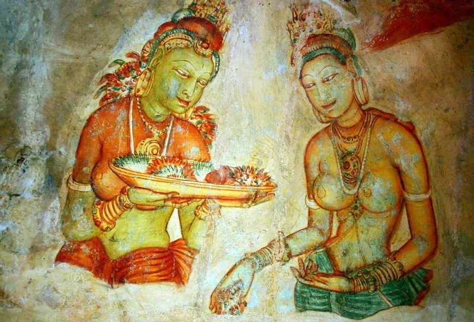

Sigiriya is probably one of the things Sri lankans can boast about.It is a Rock built by King Kashyapa 1 in the 5 th century and top of it he built his palace.Sigiriya is also considered as the 8 th world wonder from numerous sources.
Sigiriya has alot of heritage and archaelogical value and some of the ruins inside reflect amazing architectural designs used by engineers and architects back in the day.The Famous sigiriya Graffiti(Frescoes) display the cultural aspect back in the from Women's clothing and their lifetyle.
Sigiriya is still visited by many tourists both local and foreign.
The Mirror Wall
The mirrow wall is a thoroughly polished wall and has been used as a Mirror by the king when he walks along his palace.
The wall has been made of brick masonry and has been highly polished with white plaster.
Through cebturies passed the wall has been used as a paper in which people of different social classes such as Poets,Provincial governers and even religous have inscribed in this wall.
They wrote different kind of Poems relating to various emotional aspects such as Love,Irony and even their personel experiences.
These poems have High literary value becuase of the amazing and beautiful combination of words and metaphors used.There are more than 1500 poems and various artworks inscribed in the Mirrow wall.
The Mirrow wall path
A few Poems Inscribed
Sigiriya Frescoes
Tourists examing

A zoomed look of the Frescoes
These paintings can be found on the Western Surface of the Sigiriya Rock.
It is originally said that these Paintings were originally painted from white to showcase purity like the ancient gods.
It is said that king had a vast number of beautiful female servants and they were the ones who inspired for the artists to have golden colored skins.
The Sophisticated jewellary these women wore also indicates that they also may be part in the Royal Family possibly the King's Queen or his daughters.
Some people also say that these were goddeses or even Sacred women From different Tribes(Ex:Naga,Raksha).
The necklace,Earings and Bangles they wore gives us an idea on how Women used to keep them selves beautiful and glamouring.
Historians belive that these Frescoes are one of the oldest paintings of the world.
The color schememes used to draw these drawings and the amount of detail shows how talented the ancients artists were.
The Architectural Design
Site Plan
The Site Plan
Sigiriya has been development to a Urban Planning concept and one of the few most structures in the First millenium to be built accroding to a site plan.
The site plan is very descriptive and detailed.The plans consists both asymmetrical and symmetrical concepts to mix the natural environmet with man made constructions.
According to the Site plan on the right side is a park for the royals that water retaining structures built with sophisticated hydraulic systems in which some even work in the prescent day.
The south area has a Reservoir and according to some sources this has been used to store water to be used in the dry season.There are 5 gates available in the site plan to enter sigiriya.
It is said that the west gate has been made for the Royal Family to Enter.
Gardens
The gardens established in sigiriya are one of the oldest landscaped gardens in the world.
Proper symmetrical planning and designing have been used when constructing these structures.
3 types of gardens can be found in here and they are: